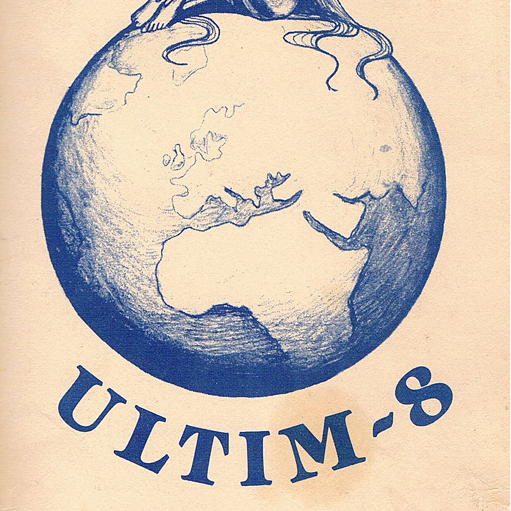
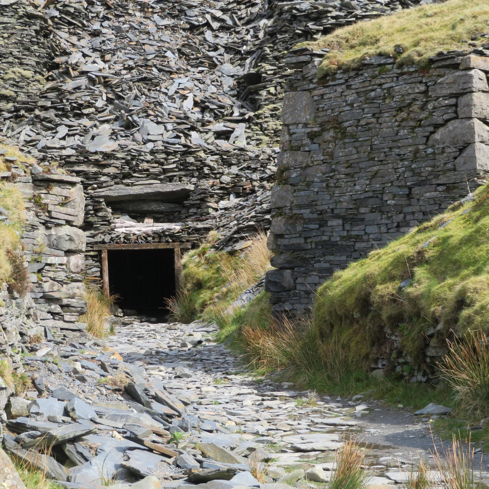

.jpg){kind=link}
COVER STORYOct 9, 2026
1,375 Feet Down
On October 15, Roni Size plays 1,375 feet down an abandoned Welsh slate mine, and the mountain gets a say in the mix. It is jungle's oldest dream, a rave nobody can find. It is also a watch launch. Who gets to sell underground now?
Every raver of a certain vintage carries the same memory somewhere behind the ribs: a phone number scrawled on a flyer, a convoy following the tail lights in front of it down a lane with no name, and then, just past the point where you started to feel foolish, the first low thud coming up through the ground before you could see any lights. The whole romance of the thing was that the room was hard to find. If you got there, you had earned it, and so had everyone dancing next to you.
On Thursday, October 15, that memory gets taken about as literally as possible. Roni Size, the Bristol producer who helped carry jungle and drum and bass out of the dance and into the Mercury Prize, is set to play a one-off session 1,375 feet beneath the mountains of Eryri, inside the abandoned Cwmorthin slate mine near Blaenau Ffestiniog. It is billed as an attempt at the world's deepest rave. It is also, and nobody is pretending otherwise, the launch of a watch.
The way down
Nobody strolls into this one. The lucky few will follow Size through miners' stairways, waterlogged passages and underground ravines, with scrambles, zip lines and abseils down sheer rock faces before they reach a chamber that becomes a dancefloor for one night only. Go Below, the adventure operator that already runs trips at the site, is guiding the descent, with requirements on age, fitness and equipment. So leave the platforms at home. The fit for this floor is whatever the kit list says, and the eyeliner had better be waterproof.
EDM.com opened its write-up with the best line anyone has managed about the whole thing: "Somewhere a rave promoter is explaining to an insurance company that the venue is a hole in North Wales and the entrance is a rope." It is funny because it is the oldest problem in the culture, finally given a budget.
The mine has its own long shift behind it. Quarrying at Cwmorthin started in 1810, the workings followed the slate veins underground, and after decades of stops and starts it shut for good in 1997. Sit with that date for a second. The year this mountain stopped giving up slate is the year Roni Size and Reprazent won the Mercury Prize for New Forms. Coincidence, obviously. But it is the kind that makes a room feel like it was waiting.


A set that goes into the rock
What makes the gear heads lean forward is the sound. Elements of Size's set will be driven into the surrounding slate using vibration transducers. Geophones and hydrophones will then pick up the frequencies as they travel through rock, mud and water. The team has measured the mine's acoustic response with convolution reverb, and that response gets fed back into the live mix. WalesOnline describes the end result as a recording with Eryri's "litho-acoustic signature" cut into it.
In plainer words: the mountain gets a channel on the mixer.
Size frames it as how he has always played. "Back in Bristol, we'd put on a party wherever we could," he said in the press release. "Raves could take place in some crazy and unexpected places, on someone's front lawn, down in tunnels, but what I've always done is play to the environment, and the crowd. The set is a living, breathing thing that reflects the people there with you."
And then the line that will end up on every poster: "How much more could you reflect the environment than by pumping a set into the mountain, hearing the sound travelling through the slate, rock and mud, and bringing it back into the mix? It's the most underground of underground raves ever."
Where the boy from St Andrews learned the room
That instinct has roots. Size was born Ryan Williams in Bristol in 1969, the son of Jamaican immigrants, and grew up in St Andrews with reggae in his ears and his brother's Studio One records within reach. Expelled from school at sixteen, he started turning up at house parties thrown by The Wild Bunch, the sound system that came before Massive Attack, and learned production in the Sefton Park youth club basement, where someone had the good sense to leave out decks, a mixing desk, drum machines and samplers.
Then the free-party world. Size set up a label called WTP, short for "Where's The Party At?", as part of Circus Warp, one of the sound systems of the early nineties free scene. In 1993 came Full Cycle Records, with Size alongside Krust, Suv and DJ Die, and in 1994 Bryan Gee's new V Recordings put out "Agility" by Size and Die as its second release.
Then came Reprazent, which debuted live at Tribal Gathering in April 1997 with live bass and drums out front. New Forms came out on Talkin' Loud that June and won the Mercury Prize. If you were near a dancefloor that autumn, you remember Onallee on "Brown Paper Bag" pulling the room up off its heels. A sound born in basements and fields had been handed a trophy, and it never fully went back underground.
The rave nobody could find
To feel why a hole in a Welsh mountain lands so hard, remember what the hidden location meant. In May 1992, police efforts to stop the annual Avon Free Festival around Bristol pushed travellers and sound systems out across neighbouring counties, and the party landed on Castlemorton Common in the Malvern Hills. An estimated 20,000 to 40,000 people turned up over a week. Circus Warp was there, alongside Spiral Tribe, Bedlam and DiY. The headlines that followed fed straight into the Criminal Justice and Public Order Act 1994, which passed into law that November and famously defined the music it was policing as sounds "wholly or predominantly characterised by the emission of a succession of repetitive beats."
That law is a big part of why the hidden room became folklore. Secrecy stopped being a style and became a survival skill. The flyer told you just enough; the rest was a phone call, a car park, a rumour. Even out on the Welsh borders, crews like Ultim8 in Knighton were printing hand-drawn flyers promising it was "time to come alive." The ritual was the search, and the reward was a floor full of people who had made the same leap of faith.
Who gets to sell underground
So here is the tension, worth holding gently rather than snapping in half. The Cwmorthin rave is organised by G-SHOCK, and it doubles as the debut of the brand's new GDG-B100 MUDMAN. Places are allocated through a public ballot, which closed on October 9, and those who complete the descent get the watch before anyone else. WalesOnline's subhead captured the mood in five words: "welcome to 2026."
There is something dizzying about reaching the hardest-to-find dancefloor anywhere by filling in a form. The free-party generation hid the location because the law wanted them gone. Here the location is the product. The barrier is no longer knowing someone with the right number; it is luck, a fitness check, and a brand that can afford Starlink to broadcast the set on G-SHOCK Radio. The full performance lands on Mixcloud afterward, so the most exclusive rave of the year will also be one of the most widely heard.
And yet. The person at the bottom of that shaft is not a content creator borrowing rave aesthetics. He came up through the actual Bristol free-party network and named a label after the oldest question in the culture. If a watch company is paying for the most literal underground rave in history, it matters that the decks went to someone who earned that word the long way.
The deeper question is not whether a brand should throw the party. It is whether anyone else still can. Castlemorton happened because thousands of people decided a field belonged to them for a week. Cwmorthin is happening because a sponsor, a safety team and an adventure operator agreed on a chamber. Both are chasing a room with no one watching. Only one needed a press release.
Down there, in the dark
Strip away the record claim and the product drop and something like magic is left: a small group of strangers, tired from the climb, mud on their knees, standing in a cathedral of slate while a jungle pioneer plays and the mountain answers back. By the time they get to the floor, as Size put it, "everyone there will already have shared an adventure." That is the afters before the party even starts, the thing every great night has always been made of.
The record still has to be independently verified, and the set still has to work in a chamber built for slate, not dancing. But 1,375 feet down, on a Thursday in October, the oldest dream in this culture gets one more go: a room you had to fight to find, a sound you felt before you heard it, and a crowd that knows exactly what it took to be standing there.
Bring a torch. Bring your best ear. Leave the platforms at home.
Sources
- Mixmag, "Roni Size to host 'world's deepest rave' in abandoned Welsh mine" (Gemma Ross, Oct 6, 2026): https://mixmag.net/read/roni-size-host-world-deepest-rave-abandoned-welsh-mine-news
- EDM.com, "World Record Attempt for 'Deepest Rave' Taking Place in Abandoned Slate Mine" (Jason Heffler, Oct 6, 2026): https://edm.com/news/world-record-attempt-deepest-rave-cwmorthin-slate-mine/
- WalesOnline, "Rave to take place 1,375 feet underground in abandoned Welsh mine" (Kathryn Williams, Oct 6, 2026): https://www.walesonline.co.uk/whats-on/music-nightlife-news/legendary-dj-perform-1375-feet-34722420
- G-SHOCK MUDMAN ballot page: https://gshock.casio.com/uk/mudman
- Wikipedia, Roni Size: https://en.wikipedia.org/wiki/Roni_Size
- Wikipedia, Roni Size & Reprazent: https://en.wikipedia.org/wiki/Roni_Size_%26_Reprazent
- Wikipedia, New Forms: https://en.wikipedia.org/wiki/New_Forms
- Wikipedia, Cwmorthin quarry: https://en.wikipedia.org/wiki/Cwmorthin_quarry
- Wikipedia, Castlemorton Common Festival: https://en.wikipedia.org/wiki/Castlemorton_Common_Festival
- Wikipedia, Criminal Justice and Public Order Act 1994: https://en.wikipedia.org/wiki/Criminal_Justice_and_Public_Order_Act_1994
- Criminal Justice and Public Order Act 1994, section 63 (legislation.gov.uk): https://www.legislation.gov.uk/ukpga/1994/33/section/63